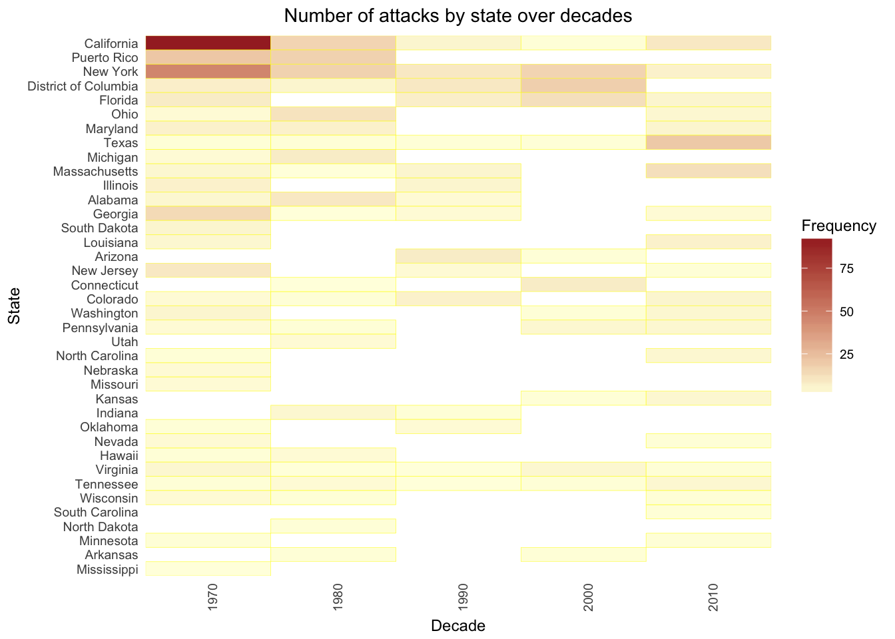
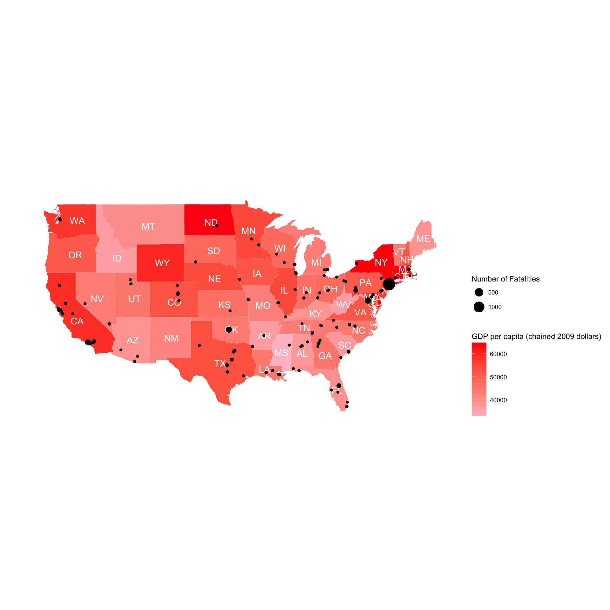

Investigating potential trends and differences in attacks by state across time, the heatmap above shows the frequency of attacks for each state across the decades. From the heatmap, attacks appear to be most widespread across states in the 1970s and 2010s, with most states having experienced at least one attack in these two decades. On the other hand, a majority of the states did not experience any attack in the 1990s and 2000s, although a higher concentration of attacks in states like New York, District of Columbia and Florida. This may be indicative of a change in trend from having a widespread attack (attacking most states) in earlier years to more focused attacks (on few states), but a reversal to more widespread attacks in the last decade.
Analysing trends in frequency of attacks for each state, certain states like California, New York and Texas have experienced attacks across all decades, with the highest number of attacks for California and New York especially in the 1970s. This may be indicative of more focused plans in targeting particular states such as these, where these states tend to have the largest population sizes and hence more frequently targeted (potentially to aim for a bigger impact).

Moving from the broad picture of the details of the terrorist attacks in US as a whole to the specific picture of the relationship between each state and the attacks, we now find a possible reason as to why California and New York are prone to terrorist attacks. Those are two states with very high GDP per capita as portrayed by the Choropleth shading and terrorist groups may think that attacking those states would result in a greater disruption of (economic) activity. As a corollary, it is also worth noting that states with lower GDP per capita (lighter shades) tend to be less affected by terrorist attacks.